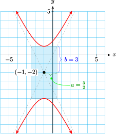

Section 9.4 Conic Sections: Hyperbolas
If a cone is cut by a plane parallel to its axis, the intersection is a hyperbola, the only conic section made of two separate pieces, or branches. Hyperbolas occur in a number of applied settings. The navigational system called LORAN (long-range navigation) uses radio signals to locate a ship or plane at the intersection of two hyperbolas. Satellites moving with sufficient speed will follow an orbit that is branch of a hyperbola; for example, a rocket sent to the moon must be fitted with retrorockets to reduce its speed in order to achieve an elliptical, rather than hyperbolic, orbit about the moon.
The hyperbola is defined as follows.
Definition 9.41. Hyperbola.
A hyperbola is the set of points in the plane, the difference of whose distances from two fixed points (the foci) is a constant.


If the origin is the center of the hyperbola and the foci (labeled \(F_1\) and \(F_2\) on the graphs above) lie on the axes, we can use the distance formula to derive its equation.
Central Hyperbola.
The equation of a hyperbola with center at the origin is
In the first case, the two branches of the hyperbola open left and right, so the graph has \(x\)-intercepts at \(a\) and \(-a\) but no \(y\)-intercepts. (See figure above left.) The segment joining the \(x\)-intercepts is the transverse axis, and its length is \(2a\text{.}\) The endpoints of the transverse axis are the vertices of the hyperbola. The segment of length \(2b\) is called the conjugate axis.
In the second case, the graph has \(y\)-intercepts at \(b\) and \(-b\) but no \(x\)-intercepts—the two branches open up and down. (See figure above right.) Here the \(y\)-intercepts are the vertices, so the transverse axis is vertical and has length \(2b\text{.}\) The conjugate axis has length \(2a\text{.}\)
Subsection Asymptotes of Hyperbolas
The branches of the hyperbola approach two straight lines that intersect at its center. These lines are asymptotes of the graph, and they are useful as guidelines for sketching the hyperbola. We first sketch a rectangle (called the central rectangle) whose sides are parallel to the axes and whose dimensions are \(2a\) and \(2b\text{.}\) The asymptotes are the diagonals of this rectangle.
Example 9.42.
Graph \(\dfrac{y^2}{9} - \dfrac{x^2}{4} = 1\)
The graph is a hyperbola with center at the origin. The \(y^2\)-term is positive, so the branches of the hyperbola open upward and downward. Because \(a^2=4\) and \(b^2=9\text{,}\) we have \(a=2\) and \(b=3\text{,}\) and the vertices are \((0,3)\) and \((0,-3)\text{.}\) There are no \(x\)-intercepts.
We construct the central rectangle with dimensions \(2a=4\) and \(2b=6\text{,}\) as shown in the figure. Then we draw the asymptotes through the diagonals of the rectangle. The asymptotes have slopes \(\pm \dfrac{3}{2}\text{.}\) Finally, we sketch the branches of the hyperbola through the vertices and approaching the asymptotes.

Checkpoint 9.43. Practice 1.

The equation of a central hyperbola may be written as
where \(A\) and \(B\) have opposite signs and \(C \ne 0\text{.}\) As with ellipses, it is best to rewrite the equation in standard form in order to graph it.
Example 9.44.
Write the equation \(4y^2-x^2=16\) in standard form and describe the important features of its graph.
We first divide each side by 16 to obtain
The graph is a central hyperbola with \(y\)-intercepts \(2\) and \(-2\text{,}\) as shown in the figure. The slopes of the asymptotes are given by
so the equations of the asymptotes are
Checkpoint 9.45. Practice 2.
Checkpoint 9.46. QuickCheck 1.
We can find exact coordinates of points on a hyperbola by substituting a value for one variable and solving for the other variable.
Example 9.47.
Find the exact coordinates of any points with \(x\)-coordinate \(x=2\) on the hyperbola with equation \(4x^2-y^2=16\text{.}\) Plot and label those points on the hyperbola.
We substitute in the given equation.
There are two points with \(x=2\text{,}\) namely \(\left(2, \sqrt{5}\right)\) and \(\left(2, -\sqrt{5}\right)\text{,}\) as shown in the figure.

Checkpoint 9.48. Practice 3.
Subsection The Central Conics
The fourth conic section, after circles, ellipses, and hyperbolas, is the parabola. We have already encountered parabolas in our study of quadratic functions. In particular, the graph of \(y = ax^2\) has its vertex at the origin and opens up or down, depending on the sign of \(a\text{.}\) The graph of \(x = ay^2\) is a parabola that opens to the left or right. There is also a geometric definition of a parabola, but we will not discuss that here.
Example 9.49.
Write each equation in standard form and describe its graph.
\(\displaystyle x^2=6y^2+8\)
\(\displaystyle x^2=\dfrac{4-y^2}{2}\)
-
The equation \(x^2=6y^2+8\) is equivalent to
\begin{gather*} x^2-6y^2=8\qquad \text{ or }\qquad \frac{x^2}{\left( \sqrt{8} \right)^2} - \frac{y^2}{\left( \frac{2}{\sqrt{3}} \right)^2}=1 \end{gather*}The graph is a hyperbola that opens left and right.
-
The equation \(x^2=\dfrac{4-y^2}{2}\) is equivalent to
\begin{gather*} x^2+y^2=4\qquad \text{ or }\qquad \frac{x^2}{\left( \sqrt{2} \right)^2} + \frac{y^2}{2^2}=1 \end{gather*}The graph is an ellipse with major axis on the \(y\)-axis because \(2\gt\sqrt{2} \text{.}\)
Checkpoint 9.50. Practice 4.
Subsection Translated Hyperbolas
The standard form for the equations of hyperbolas centered at the point \((h,k)\) can be derived using the distance formula and the definition of hyperbola.
Hyperbolas.
The equation for a hyperbola centered at \((h,k)\) has one of the two standard forms:
The first equation describes a hyperbola whose transverse axis is parallel to the \(x\)-axis, so that the branches open left and right, and the second equation describes a hyperbola whose transverse axis is parallel to the \(y\)-axis, so that the branches open up and down, as shown below.


Example 9.51.
- Graph \(\dfrac{(x-3)^2}{8} - \dfrac{(y+2)^2}{10} = 1\)
- Find the equations of the asymptotes.
-
The graph is a hyperbola with
\begin{gather*} (h,k) = (3,-2),\quad a = \sqrt{8} = 2\sqrt{2},\quad \text{ and } b=\sqrt{10} \end{gather*}Because the \(x^2\)-term is positive, the branches open left and right. The coordinates of the vertices are thus \((3+2\sqrt{2},-2)\) and \((3-2\sqrt{2},-2)\text{,}\) or approximately \((5.8,-2)\) and \((0.2,-2)\text{.}\) The ends of the conjugate axis are \((3,-2+\sqrt{10}\)) and \((3,-2-\sqrt{10}\)), or approximately \((3,1.2)\) and \((3,-5.2)\text{.}\)
The central rectangle is centered at the point \((3,-2)\) and extends to the vertices in the horizontal direction and to the ends of the conjugate axis in the vertical direction. We draw the asymptotes through the opposite corners of the central rectangle, and sketch the hyperbola through the vertices and approaching the asymptotes to obtain the graph shown below.
-
Both asymptotes pass through the center of the hyperbola, \((3,-2)\text{.}\) Their slopes are
\begin{gather*} \frac{\sqrt{10}}{\sqrt{8}} = \frac{\sqrt{5}}{2}\quad \text{ and } \dfrac{-\sqrt{5}}{2} \end{gather*}We substitute these values into the point-slope formula to find the equations
\begin{gather*} y + 2 = \frac{\sqrt{5}}{2}(x-3)\quad \text{ and } \quad y + 2 = \frac{-\sqrt{5}}{2}(x-3) \end{gather*}
Checkpoint 9.52. Practice 5.
Subsection Writing in Standard Form
We can write the equation of a hyperbola in standard form by completing the squares in \(x\) and \(y\text{.}\)
Example 9.53.
- Write the equation in standard form.\begin{equation*} y^2-4x^2+4y-8x-9=0 \end{equation*}
- Graph the equation.
-
We prepare to complete the square by factoring out \(-4\) from the \(x\)-terms.
\begin{gather*} (y^2+4y\hphantom{-} \underline{ \hphantom{0000}})-4(x^2+2x\hphantom{-}\underline{\hphantom{0000}})=9 \end{gather*}We complete the square in \(y\) by adding \(\alert{4}\) to each side of the equation. To complete the square in \(x\) we add 1 to \(x^2+2x\text{,}\) so we add \(-4\cdot \alert{1}\text{,}\) or \(\alert{-4}\) to the right side, to get
\begin{gather*} (y^2 + 4y + \alert{4}) - 4(x^2 + 2x + \alert{1}) = 9 + \alert{4}~\alert{- 4} \end{gather*}or
\begin{gather*} (y+2)^2 - 4(x+1)^2 = 9 \end{gather*}Finally, we divide each side by 9 to obtain the standard form
\begin{gather*} \frac{(y+2)^2}{9} - \frac{(x+1)^2}{\dfrac{9}{4}} = 1 \end{gather*} -
The graph is a hyperbola with center at \((-1,-2)\text{.}\) Because the \(y^2\)-term is positive, the transverse axis is parallel to the \(y\)-axis, and
\begin{gather*} b^2 = 9,\quad a^2 = \frac{9}{4} \end{gather*}Thus, \(b=3\) and \(a = \dfrac{3}{2}\text{,}\) and the vertices are \((-1,1)\) and \((-1,5)\text{.}\) The ends of the conjugate axis are \(\left(\dfrac{-5}{2}, -2\right)\) and \(\left(\dfrac{1}{2}, -2\right)\text{.}\)
The central rectangle is centered at \((-1,-2)\text{,}\) as shown in the figure. We draw the asymptotes through the corners of the rectangle, then sketch the hyperbola by starting at the vertices and approaching the asymptotes.
Checkpoint 9.54. Practice 6.

Checkpoint 9.55. QuickCheck 2.
Subsection General Quadratic Equation in Two Variables
We have considered graphs of second-degree equations in two variables,
for which \(B\text{,}\) the coefficient of the \(xy\)-term, is zero. These graphs are conic sections with axes parallel to one or both of the coordinate axes. If \(B\) does not equal zero, the axes of the conic section are rotated with respect to the coordinate axes. The graphing of such equations is taken up in more advanced courses in analytic geometry.
The graph of a second-degree equation can also be a point, a line, a pair of lines, or no graph at all, depending on the values of the coefficients \(A\) through \(F\text{.}\) Such graphs are called degenerate conics.
Given an equation of the form
we can determine the nature of the graph from the coefficients of the quadratic terms. If the graph is not a degenerate conic, the following criteria apply.
Conic Sections.
The graph of \(~Ax^2 + Cy^2 + Dx + Ey + F = 0~\) is
a circle if \(A=C\text{.}\)
a parabola if \(A=0\) or \(C=0\) (but not both).
an ellipse if \(A\) and \(C\) have the same sign.
a hyperbola if \(A\) and \(C\) have opposite signs.
Example 9.56.
Name the graph of each equation, assuming that the graph is not degenerate.
\(\displaystyle 3x^2+3y^2-2x+4y-6=0\)
\(\displaystyle 4y^2+8x^2-3y=0\)
\(\displaystyle 4x^2-6y^2+x-2y=0\)
\(\displaystyle y+x^2-4x+1=0\)
The graph is a circle because the coefficients of \(x^2\) and \(y^2\) are equal.
The graph is an ellipse because the coefficients of \(x^2\) and \(y^2\) are both positive.
The graph is a hyperbola because the coefficients of \(x^2\) and \(y^2\) have opposite signs.
The graph is a parabola because \(y\) is of first degree and \(x\) is of second degree.
The standard forms for the conic sections are summarized in the table below. For the parabola, \((h, k)\) is the vertex of the graph, and for the other conics, \((h, k)\) is the center.

The coefficients \(D\text{,}\) \(E\text{,}\) and \(F\) do not figure in determining the type of conic section the equation represents. They do, however, determine the position of the graph relative to the origin. Once we recognize the form of the graph, we can write the equation in standard form in order to discover more information about the graph.
Checkpoint 9.57. Practice 7.
Checkpoint 9.58. QuickCheck 3.
Exercises Problem Set 9.4
Warm Up
1.
Use your calculator to graph \(y^2 − x^2 = 1\) in the window \([-6,6]\times [-4,4]\text{.}\) First, solve the equation for \(y\text{.}\) (You should get two functions.)
The graph of this equation is a .
The graph has vertices at and .
Now add to your graph the lines \(y = x\) and \(y = -x\text{.}\) These are the asymptotes of the hyperbola.
2.
Use the calculator to graph \(x^2 − y^2 = 1\) in the window \([-6,6]\times [-4,4]\text{.}\) (Follow the steps above for Problem 1.)
What are the vertices of this hyperbola?
What are the asymptotes?
How does this hyperbola differ from the one in Problem 2?
Skills Practice
For Problems 3–8, graph the hyperbola.
3.
\(\dfrac{y^2}{12}-\dfrac{x^2}{8}=1\)
4.
\(\dfrac{x^2}{25}-\dfrac{y^2}{9}=1\)
5.
\(3x^2=4y^2+24\)
6.
\(9x^2-4y^2=36\)
7.
\(y^2=\dfrac{1}{2}x^2-16\)
8.
\(\dfrac{1}{2}x^2=y^2-12\)
For Problems 9 and 10:
Find the equation for the hyperbola.
Use your equation to complete the table.
9.
| \(x\) | \(0\) | \(5\) | \(\hphantom{00}\) | |
| \(y\) | \(\hphantom{00}\) | \(\pm 2\) | \(\hphantom{00}\) | \(-3\) |
10.

| \(x\) | \(0\) | \(\hphantom{00}\) | \(4\) | \(\hphantom{00}\) |
| \(y\) | \(0\) | \(\hphantom{00}\) | \(-2\) |
11.
Graph \(x^2 - y^2 = 4\text{,}\) \(x^2 - y^2 = 1\text{,}\) and \(x^2 - y^2 = 0\) on the same set of axes. What do you observe?
Graph \(4x^2 - y^2 = 16\text{,}\) \(4x^2 - y^2 =4\text{,}\) and \(4x^2 - y^2 =0\) on the same set of axes. What do you observe?
12.
Graph \(x^2 - y^2 = 0\text{.}\) (Hint: Factor the left side of the equation and use the zero-factor principle to write two equations, then graph them.) Describe your graph.
Graph \(4x^2 - y^2 = 0\text{.}\) Describe your graph.
For problems 13–18:
Graph the hyperbola.
Give the exact coordinates of any four points on the hyperbola
13.
\(\dfrac{(y+2)^2}{6}-\dfrac{(x+2)^2}{10}=1\)
14.
\(\dfrac{(x-4)^2}{9}-\dfrac{(y+2)^2}{16}=1\)
15.
\(9y^2-8x^2+72y+16x+64=0\)
16.
\(4x^2-6y^2-32x-24y+16=0\)
17.
\(10y^2-5x^2+30x-95=0\)
18.
\(12x^2-3y^2+24y-84=0\)
For Problems 19–22, write an equation for the hyperbola with the properties given.
19.
Center at \((6,-2)\text{,}\) \(a = 1\text{,}\) \(b = 4\text{,}\) opening left and right
20.
Center at \((-1, 5)\text{,}\) \(a = 6\text{,}\) \(b = 8\text{,}\) opening up and down
21.
One vertex at \((1, -2)\text{,}\) one end of the vertical conjugate axis at \((-5, 1)\)
22.
One vertex at \((-1, 3)\text{,}\) one end of the horizontal conjugate axis at \((-5, 1)\)
For Problems 23–28, name the graph of the equation and descsribe its main features.
23.
\(x^2+2y-4=0\)
24.
\(y^2=6-4x^2\)
25.
\(y^2-4x^2+2y-x=0\)
26.
\(6+\dfrac{x^2}{4}=y^2\)
27.
\(y-2=\dfrac{(x+4)^2}{4}\)
28.
\(\dfrac{(x+3)^2}{4}+\dfrac{y^2}{12}=1\)
Applications
Problems 29–32 deal with the cooling tower at an electricity generating facility. The shape of the tower, called a hyperboloid, is obtained by rotating a portion of the hyperbola \(~\dfrac{x^2}{100^2}-\dfrac{y^2}{150^2}=1\) around the \(y\)-axis.
29.
The base of the cooling tower is 360 feet below the center of the hyperbola. What is the diamter of the base?
30.
The top of the cooling tower is 200 feet above the center of the hyperbola. What is the diameter of the top?
31.
The diameter of the tower first decreases with height and then increases again. There are two heights at which the tower's diameter is 250 feet. Find the greater of the two heights.
32.
Find the height at which the tower's diameter is 200 feet.